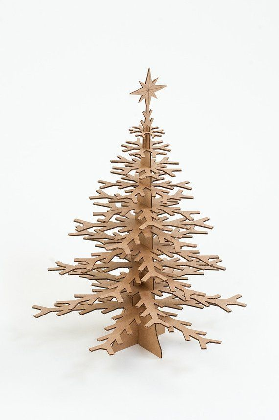
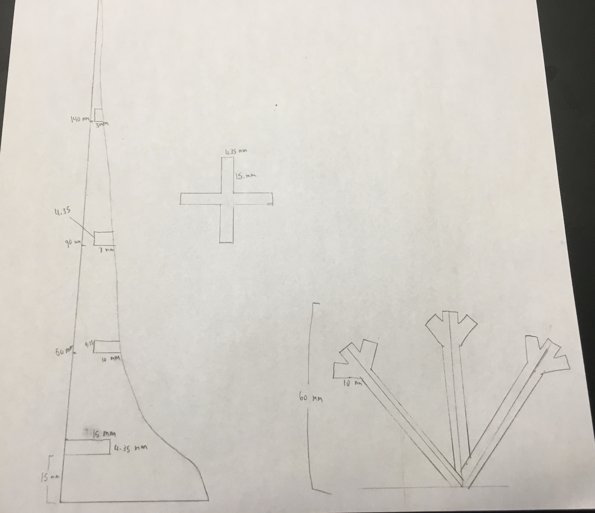

For my press-fit kit I decided to try and make a cardboard tree, taking inspiration from this image:
Unfortunately I forgot to download Fusion 360 for the class where we started learning to use it, so I spent most of the class installing it. Since I missed the tutorial I was pretty confused about how to use the program when I started working on my tree, but I managed to limp along with help from Rob and some friends. I ran into a lot of problems that I couldn't figure out how to solve so unfortunately I didn't get to the stage where I cut out the kit, but I can explain what it would have looked like. Here is a sketch of the tree components:
The tall thing on the left is a part of the trunk. My plan was to cut out four of these which I would position with the long flat sides pointing at each other (in a way that would look like an X from above). The small cross that I drew in the middle was meant to hold the trunks together; it would have slotted into the first slot at the bottom of the trunks, with each point of the cross slotting into one trunk and thus holding them together. The drawing on the right is what each "leaf" was supposed to look like. I planned on having three layers of leaves, three leaves per trunk. The bottom layer would be 6 cm long, the middle layer would be 4 cm, and the top layer would be 2 cm.